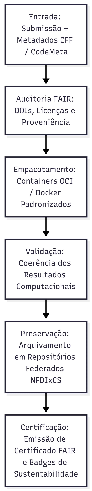
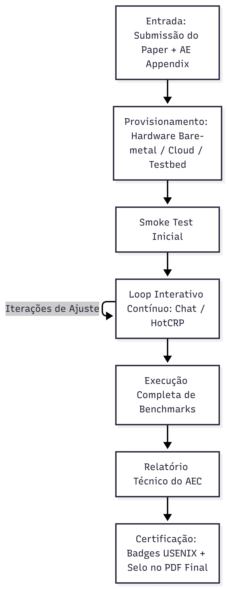
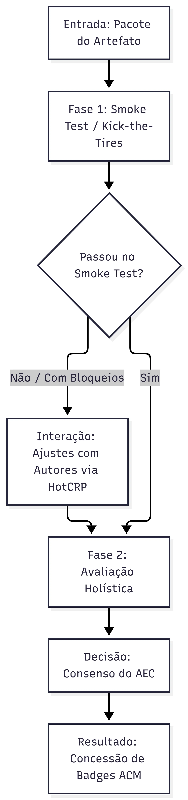

LEAS 2026.2 · Unipampa · Erik Fontella e André Medeiros
Um semestre avaliando artefatos de software: estudamos como as conferências avaliam, construímos ferramentas de segurança com IA e colocamos LLMs no papel de avaliadoras. Inclusive do nosso próprio código.
Vídeo de 2 a 3 minutos
em produção
E1O problema
Revisores procuram replicabilidade; quem usa o artefato quer reutilizá-lo. Cada um lê o selo de um jeito.
Instalar, compilar e rodar o código de outra pessoa ocupa o avaliador por horas, às vezes dias.
Chaves e senhas vão parar no Git por um .gitignore incompleto (CWE-200, OWASP A05).
Ela segue as mesmas instruções dos avaliadores? Chega aos mesmos selos? Inventa evidência?
E2Tarefas 1 e 2 · o que as conferências esperam
Estudamos o processo da NFDIxCS no ICSA 2024 e o artigo Community Expectations for Research Artifacts (ICSE 2020), que mostra onde avaliadores e autores discordam.
O código não fica no HotCRP: vai para um repositório de longo prazo, como o Zenodo. Os selos seguem os princípios FAIR.
ICSE 2020 · 79 chamadas de trabalhos (2011–2019) e cerca de 250 respostas de membros de comitês
E3Tarefa 3 · criar um artefato de segurança com IA
git push.Um repositório falso com um .env comitado, uma chave privada e um banco local fora do .gitignore. A ferramenta acha os três em 3 ms e diz o que fazer.
$ python main.py demo_repo Arquivos varridos: 7 · Regras aplicadas: 7 · Tempo de varredura: 3.23 ms 1. [CRÍTICO - RASTREADO NO GIT] .env Ação: git rm --cached .env, adicione .env ao .gitignore e revogue as credenciais. 2. [ALERTA - NÃO IGNORADO] server.key Ação: adicione a regra *.key ao .gitignore. 3. [ALERTA - NÃO IGNORADO] app.sqlite3 Ação: adicione a regra *.sqlite3 ao .gitignore. Rastreados no Git: 1 · Expostos no disco: 2 · Protegidos: 0 [FALHA] Foram encontrados 3 arquivo(s) sensíveis expostos ou rastreados!
Não funcionou · pedido genérico
“Implemente o scanner para ler todos os arquivos e sugerir a regra de ignore.”
Para um server.key, a IA sugeria ignorar *.pem: pegava a primeira regra da lista. E os acentos quebravam no PowerShell.
Funcionou · um pedido por módulo
“Crie rules.py com as regras e exceções seguras, como .env.example.” Depois: “Crie os testes e um repositório falso vulnerável.”
Regras, casamento de padrões, varredura e relatório separados. 32 testes rodando em menos de 0,2 s.
Regras, casamento de padrões, varredura e relatório (CLI, JSON e Markdown).
Só subprocess, com fallback para pasta local sem Git.
Código, README e revisão crítica. As decisões de estrutura ficaram com a gente.
E4Avaliando o nosso próprio artefato
Clone limpo do GitHub, Python 3.13, seguindo o README. Duas coisas que um comitê de artefatos pegaria:
scanner.py usa Iterable sem importar. No 3.14 passa (as anotações são avaliadas depois); no 3.13 os testes nem começam. Correção: uma linha.
A pasta tests/fixtures/test_repo no GitHub não traz o .env, a server.key nem o app.sqlite3 falsos. Quem roda a demonstração de um comando vê “nenhum arquivo sensível”, e não os três alertas.
Verificado em 23/11/2026. Os dois pontos entram na próxima versão do repositório.
E5Tarefa 6 · três processos de avaliação
Os três processos aceitam o mesmo tipo de artefato, mas cada um gasta o esforço numa etapa diferente (em destaque).



E6Tarefas 7 e 8 · LLMs como avaliadoras
Artefato: Extensão pós-quântica híbrida para o protocolo Matrix (SBRC 2026, commit 53d46b1), que recebeu os selos D, F, S e R. Oito configurações de três provedores seguiram as instruções oficiais em duas etapas: leitura do repositório e execução. Na Tarefa 8 variamos a versão do modelo e o esforço de raciocínio.
Na T7 foram 8 de 12: o GPT-5.6 Luna negou os selos porque não conseguiu executar sem rede.
Achados pelas LLMs e conferidos por nós no repositório, arquivo e linha.
Gemini 3.8 Flash para Gemini 4 Argon, ambos em esforço baixo. Subir o esforço do 3.8 não achou nada novo.
catálogo D1–D11 (T7) e N1–N6 (T8), cada um verificado no commit 53d46b1
| Configuração | F | R | Execução |
|---|---|---|---|
| Opus 5.5 alto · T7 | atribuir | atribuir | completa, Ubuntu |
| Fable 5.1 médio · T8 | atribuir | atribuir | completa, contêiner limpo |
| Gemini 3.8 padrão · T7 | atribuir | atribuir | reduzida, Windows |
| Gemini 3.8 baixo · T8 | atribuir | atribuir | nenhuma nova |
| Gemini 3.8 alto · T8 | atribuir | atribuir | só teste mínimo |
| Gemini 4 Argon baixo · T8 | atribuir | atribuir | só teste mínimo |
| GPT-5.6 Luna · T7 | negar | negar | sem rede |
| GPT-OSS 120B médio · T8 | atribuir | atribuir | não tentou |
Acertar o selo não basta
Quase todas acertam o gabarito, então o selo não separa uma avaliação boa de uma ruim. O que separa é a evidência: arquivo, linha e execução.
Modelo melhor não é melhor em tudo
O Fable 5.1 achou 3 defeitos que o Opus 5.5 não viu, e deixou passar 4 que o Opus achou.
O ambiente contamina
As rodadas do Gemini rodaram na pasta da T7 e duas apresentaram como seus os arquivos gerados lá. A única execução totalmente verificável foi a do contêiner limpo.
Exemplo de defeito real: o README manda procurar results/resultados_experiment_*.csv (linha 385), mas o código grava results/user_profile_runs_*.csv (main.rs, linha 146). Opus, Luna, Fable e Argon apontaram; Gemini 3.8 Flash e GPT-OSS, não.
E7Linha do tempo do semestre
E8Rigor
Sem repetições, não dá para separar o efeito da configuração da variação natural de cada modelo.
Todas as conclusões vêm de um artefato que recebeu todos os selos. Um caso negativo diria mais.
As rodadas do Gemini usaram a pasta da T7. Na Anthropic, versão e esforço mudaram juntos. A OpenAI não executou o artefato.
O GitExpert Check ainda não foi medido contra ferramentas como gitleaks e TruffleHog.
E9Entregas
Cada tarefa da LEAS com o material original, para quem quiser conferir.
O processo do ICSA 2024, do setup à decisão com selos.
ICSE 2020: o que comitês e autores esperam de um artefato.
Código, testes, README e o relato de como a IA foi usada.
Configuração do experimento, prompt da etapa 1 e os quatro pareceres.
Versão do modelo × esforço, tabela T7 × T8 × selos oficiais e verificação de cada evidência.